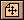
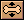
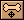
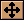
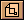

教程 5 - 动画
介绍
这个教程是上面三个教程的延伸，将教会你如何使用Moho中的动画功能。你可以使用你在上一个教程中制作的作品，你也可以直接在Moho目录中的Turorials目录中打开名为 "Tutorial4" 的文件使用。
在Moho中，创建动画有三种基本方式：动画整个层，使用骨骼动画一个对象的部分，以及动画一个对象的单个节点。这三种方式可以结合起来使用以创造极复杂的动画效果。这个教程将教你使用这三种动画方式。
打开你在上一个教程中的作品(或者Tutorial4文件)，在层面板中，确认所有层后面的小眼睛图标都显示，也就是所有的层中的对象都可见。
在工作区左上方点击动画模式标签，切换到动画编辑模式。
工作区应该如下图所示：
层动画
层动画是在Moho中制作物体动画的最简单的方法。层动画的方式有一定的限制，不过有时这就是你所需要的。层动画移动整个图层创造效果。
在层面板中点击 Clouds 层以激活它。然后把当前帧设置为72帧：这个工作需要在动画面板中完成，如果你看不到第72帧，拖动下方的滚动条直到在上方的时间标尺中看到第72帧为止，点击数字72，时间指示器会自动跳到第72帧，如下图所示：
在工具条中选择移动层工具  ，在画面上点击并拖动鼠标，将云层向右移动到如下图所示的位置：
注意，在动画面板中第72帧的位置下方出现了一个小标记，它代表这是一个关键帧，可以看到，这是层移动通道中的关键帧，它说明在这一帧你通过移动层产生了变化。你还可以看到动画面板中还有几个通道，它们分别表示不同的动画类型。
我们可以看看动画效果了：点击动画面板中的播放按钮，动画播放到结束帧时会自动循环(我们这里是72帧)看完后按下停止按钮即可停止动画播放，按下回退按钮，时间指示器会回复到第一帧的位置。
骨骼动画
骨骼动画通过控制骨骼系统来使对象产生运动。通过上一个教程，你应该已经对骨骼系统是如何工作的有了比较全面的了解。制作骨骼动画，你仅仅需要很简单的几个工具。
在层面板中点击骨骼层(Skeleton)激活它。通过点击第12帧，将其设置为当前帧(你可能需要拖动下方的滚动条来找到第12帧)。在工具条中选择操作骨骼工具  ，点击并拖动 Frank 的腿骨，直到变成如下图所示的样子：
接下来，选择移动骨骼工具  ，按住 Frank 的脊椎骨，把他向下拖动一点。(金月亮插话：通过这两步的操作，你可以看到我们移动腿骨的时候，只有腿在动，而移动脊椎骨的时候，整个 Frank 都会跟着动，这就是父子关系的体现)
接下来把当前帧设置为第24帧，从菜单中选择 Animation->Reset All Bones 命令。在动画面板中点击播放按钮来察看你的动画，按下停止按钮即可停止动画。
当你播放动画的时候，你可能会发现在24帧后，Frank就呆着不动了。你可以通过在第24帧后面增加更多的关键帧来保持 Frank 的持续运动，不过我们这里来试试 Moho 中的循环动画功能。
在层面板中双击骨骼层(Skeleton)，在弹出的对话窗口中，点选"Cycle animation" 复选框，按下OK按钮确定，然后再次播放动画，看看有什么不同。如果一个层的循环动画复选框被选中的话，它就会一遍一遍的重复它的动画而不会停下来。但是这个功能多数用作某些背景元素的动画效果，而不常用在前景元素中，不过这的确是一个很节约时间的功能。
点动画
你可以通过改变物体的单个(或者一组)节点来制作点动画。理论上，你可以通过点动画实现和骨骼动画一样的效果，只不过需要多费些功夫。点动画主要用于当你想改变某些物体的外形的时候。
在层面板中点击 Clouds 层以激活它，在工具条中选择移动工具  ，按下回车键以取消对所有物体的选择，然后在动画面板中点击快进按钮跳转到动画的最后一帧。
点击并略微移动云彩的节点，以使云彩有轻微的形变。这样当云彩在从动画开始到结束的飘动过程中会自动变形，显得更加生动。
播放动画，察看效果。
导入动画
还记得上个教程中我们是如何将 Frank 导入到我们的作品中的吗？很好，导入层的时候，如果原来的层有动画效果，会一同导入。从菜单中选择 File->Insert Layer...，在对话窗口选择 "TutorialExtras" 文件，按下OK按钮确认，在弹出的导入层对话框中选择 Beach Ball Skeleton 层，然后按下OK按钮确认。
你的作品中将会显示一个弹跳的沙滩球。按下播放按钮看看效果，它的弹跳效果很正确，可是位置不对。切换回骨骼编辑模式，我们来调整球的初始位置。选择移动层工具 ，将沙滩球移动到正确的位置。你也可以使用缩放层工具  ，来改变球的大小。(使用缩放工具的时候，同时按下Shift键以确保横竖变形一致。) 切换到动画模式，播放最后的动画。
动画部分的教程到此结束。通过这五个教程，你已经对绘图、填充、设置骨骼以及动画几种编辑模式有了很好的了解。大胆的去制作一些真正属于你自己的动画吧！
下一个教程和这几个教程没有什么直接关系，它主要讲解了Moho中图像层的概念和使用方法。